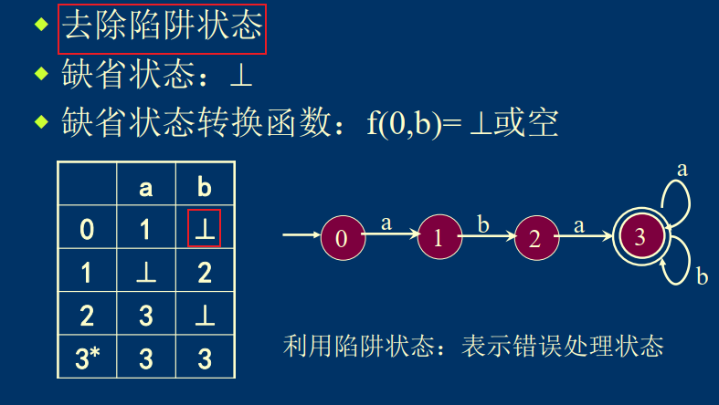
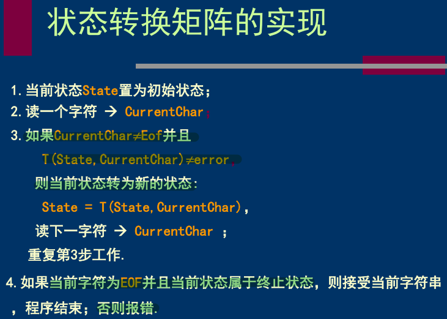
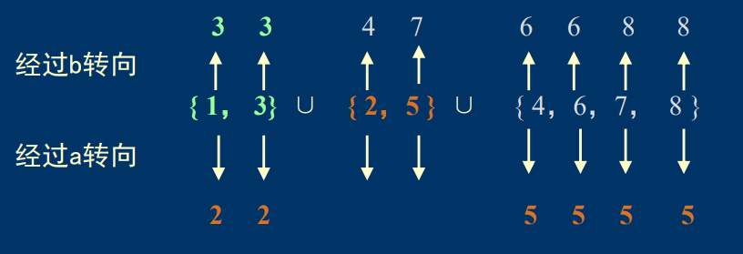
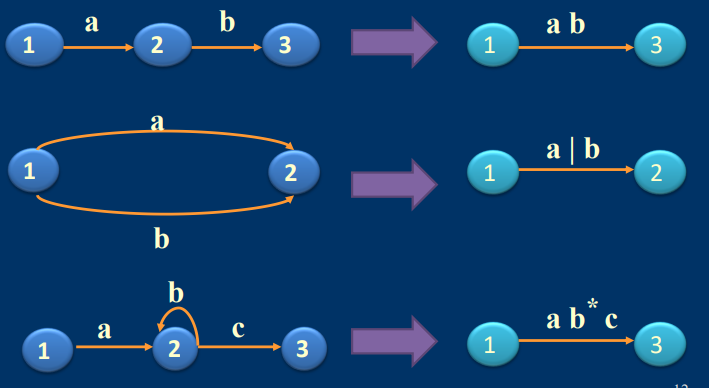
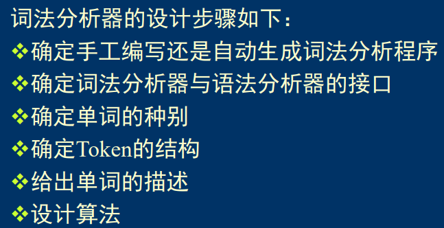
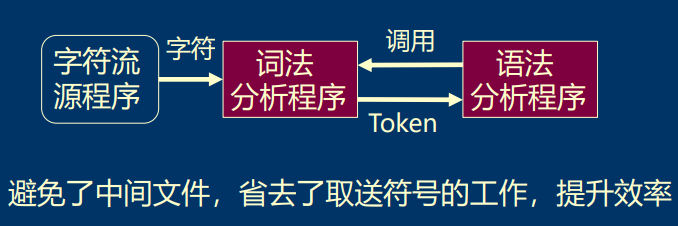
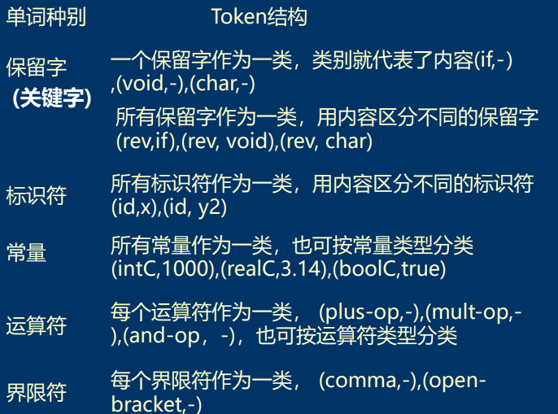

编译原理复习笔记
大题题型:
词法分析:
- DFA化简
- NFA->DFA
- 正则表达式<—>自动机
编译原理复习笔记
绪论
编译程序也叫编译器，是一种具有翻译功能的程序，其作用是将某种高级语言编写的程序翻译成语义等价的低级语言程序。
解释程序： 其作用是将源程序逐条语句地翻译成目标指令序列，并且是边翻译边执行，当翻译完成时，目标程序的执行也随之完成。可见，解释程序不会生成目标程序。
转换方式： 编译程序的开发代价是很昂贵的。 在已有A语言的编译程序的前提下，若想为B语言开发编译程序，可首先考虑能否利用A语言的编译程序。即首先将B语言程序转换成等价的A语言程序，然后再利用A语言的编译程序将其翻译成目标程序。
高级语言的翻译程序称为编译程序(Compiler)或解释程序(Interpreter)，对应的实现方式分别为编译方式或解释方式。偶尔还会采用转换方式。
编译程序的逻辑结构
词法分析：识别由字符组成的高级语言程序中的单词，并将其转化成一种内部表示（Token）的形式，同时检查是否存在词法错误。
语法分析：根据语言定义的语法规则来检验程序中是否存在语法错误。
语义分析：检查源程序有无语义错误，为代码生成阶段收集类型信息。
中间代码生成： 将源程序转换成一种称为中间代码的内部表示形式，便于优化和移植。
不是编译程序的必经阶段！不考虑优化和移植时，可以不生成中间代码直接生成目标代码
中间代码优化：变换或改造中间代码，使生成的目标代码更为高效，即节省时间和空间。和程序算法的高效无关，更多的是针对于程序具体运行时的内部优化，尤其针对有特殊要求的编译器。
不是编译程序的必经阶段，当对目标代码的运行效率要求较高时，才考虑进行中间代码的优化，优化要付出代价，优化时要考虑性价比。
目标代码生成：将中间代码变换为特定机器上的机器指令代码或汇编指令代码。

此外，编译过程还有两部分工作贯穿始终：
错误处理：当编译阶段有错误出现时，由相应的错误处理模块给出解决方案，使得编译器能够继续进行下去。
**表格管理：**为了合理的管理（构造、查找、更新……）表格（符号表、类型信息表……），设立一些专门子程序称为表格管理程序。
编译程序的开发
-
用机器语言编写编译程序
-
自展法

-
移植法
-
转换法(预处理法):C++
-
自动生成(工具法):利用Flex, Yacc,LLGen, Bison等工具自动生成词法分析器、语法分析器，从而减少编译程序开发的工作量
编译程序的分遍
所谓“遍”就是对源程序或源程序的中间表示形式从头到尾扫描一次，并作加工处理，生成新的中间结果或目标程序 ；
分遍就是对源程序或源程序的中间表示形式从头到尾扫描几次。
词法分析
词法分析程序,是编译程序的一部分，是整个编译过程的第一步工作。
**作用: ** 分离单词—>生成Token------>检查词法错误
- 扫描源程序的字符序列
- 按照源语言的词法规则识别出各类单词
- 产生用于语法分析的Token序列
- 词法错误检查
单词： 是具有独立含义的最小的语义单位.（抽象的）
Token: 单词的具体表示（具体的–数据结构）
- Token中应包含的信息没有统一的规定，可有不同的设计
- 通常包含两类信息<单词类别，单词内容> 或者<行号，单词类别，单词内容>
工作过程
在词法分析之前，编译器要进行编译预处理工作：宏替换，文件包含，条件编译
单词类型
保留字： 保留字一般是由语言系统自身定义的,通常是由字母组成的字符串。如C语言中的int, if, for, do等等。保留字在语言中具有特定的意义，是编译程序识别各类语法成分的依据 。
标识符： 用来标识程序中各个对象的名称.通常它们由用户定义，用来表示变量名、常量名、数组名、函数名和结构体域名等。
常量： 主要包括整型常量、实型常量、字符常量、字符串常量、布尔类型常量等。
特殊符号： 包括运算符、界限符和控制符（格式符）。

单词的描述与识别
- 正则表达式（描述单词）
- 自动机 （识别、描述单词）
正则表达式
基本概念
-
字母表：字母表是元素的非空有穷集合,字母表中的一个元素称为该字母表的一个字母（letter） ,也可叫做符号（symbol）或者字符(character)。
- 字母表有时也称为符号表,通常用∑ 表示。

-
符号串:由字母表中的符号组成的任何有穷序列称为字母表上的符号串。一般用$\alpha, \beta,…,x,y,z$表示
- $\epsilon$表示空串。 对任一字母表∑ ，都有$\epsilon$是∑ 上的符号串
-
符号串连接:设$\alpha$和$\beta$均是字母表∑ 上的符号串， $\alpha$和$\beta$的连接是把$\beta$的所有符号顺次地接在$\alpha$的所有符号之后所得到的符号串。记为: $\alpha \cdot \beta$， $\cdot$可省略，即$\alpha \beta$。
-
符号串的方幂:设$\alpha$是字母表∑ 上的符号串，把$\alpha$自身连接n次得到的符号串$\alpha\alpha\alpha \cdots \alpha$ (n个$\alpha$) ，称作符号串$\alpha$的n次幂，记作 $\alpha ^{n}$ 。 特别的:$\alpha ^{0} = \epsilon$
-
符号串集合:若集合A中的所有元素都是某字母表∑ 上的符号串，则称A为该字母表上的符号串集合。一般用A,B,C表示。
- 注意:空集∅不等于空串集${\epsilon }$
-
符号串集的乘积: 设A、 B 是两个符号串集合， AB表示A与B的乘积，具体定义为：AB = { xy | ( x∈A ) ∧ ( y∈B )}
- AB!=BA
- ∅A = A∅ = ∅， 其中∅表示空集
- ${\epsilon }$A = A${\epsilon }$ = A
-
符号串集合的方幂:设A为符号串的集合， 则称$A^{i}$为符号串集Ａ的方幂。 具体定义如下：
- $A^{0}={\epsilon}$
- $A^{1}=A$
- $A^{2}=AA$
- $A^{n}=AAAA\cdots A$(n个)
-
符号串集合的正闭包$A^{+}$:设A是符号串集合，则称$A^{+}$是符号串集合A的正闭包 $A^{+}=A^1∪A^2∪A^3 …∪A^n… $
-
符号串集合的星闭包$A^$:设A是符号串集合，则称A是符号串集合A的星闭包 A*$=A^0∪A^1∪A^2∪A^3 …∪A^n… $
- A* = $A^0$∪$A^+$
正则表达式的定义
- 正则表达式的语义函数:给正则表达式赋予一种语义解释的函数。
- 不同的语义解释会使得正则表达式具有不同的语义，其操作结果也会不同。
- 在词法分析中，为了用正则表达式描述单词，我们用语义函数为正则表达式和字符串集合建立一种映射关系，使得正则表达式的语义被解释成字符串集合。
- 在词法分析中，正则表达式e根据语义函数解释所得到的符号串集合称为正则表达式e的正则集。

局限性
DFA确定有限自动机
确定性的体现
- 初始状态唯一
- 状态转换函数f是一个单值函数，也就是说，对任何状态S和输入符号a，f(S,a)唯一地确定了下一个状态，即至多确定一个状态
- 转换边上不能标$\epsilon$即不接受没有任何输入就进行状态转换的情况
DFA的表示——状态转换矩阵
DFA的表示——状态转换图
用有向图表示自动机


DFA接受的串
自动机的实现
- 直接转换法 ：每个状态对应一个带标号的switch语句，转向边对应goto语句。
- 状态转换矩阵 ：自动机存储在矩阵中，状态比较多，每次都去查表，跳转

自动机等价
对于两个DFA $M_1$和$M_2$，若有L(M1)=L(M2)则称M1和M2等价
NFA
定义(与DFA对比)

接受的语言
自动机等价
NFA---->DFA


自动机最小化
基础定义:
- 等价状态:设DFA M 的两个状态S1和S2 , 如果对任意输入的 符号串x，从S1和S2出发，总是都到达接受状态或拒绝 状态中，则称S1和S2是等价的。
- 无关状态:设S是DFA M的一个状态， 若：
- 从开始状态无到S的通路
- 或
- S到任意终止状态无通路 则称S为M的无关状态
最简自动机
任意DNF的最简自动机是唯一的
算法

自动机<—>正则表达式
正则表达式----->自动机

自动机----->正则表达式

词法分析器

接口
- 词法分析作为独立的一遍
- 词法分析程序的输出放在一个中间文件中， 语法分析程序从该文件读取Token
- 词法分析作为语法分析的子程序
- 每当语法分析程序需要单词时，就调用词法分析程序，使之输出一个Token供语法分析使用
- 
单词的种别
token结构

工作过程
- 单词的DFA描述及实现
- 针对不同的单词生成对应的Token
语法分析
语法分析的基本任务是在词法分析识别出单词序列的基础上，分析判断程序的语法结构是否符合语言的语法规则
语言的语法结构用上下文无关文法来描述，因此语法分析程序的任务是按照上下文无关文法的产生式 ，判断整个单词序列是否构成语法上正确的程序
- 自顶向下
- 自底向上
文法和语言
文法(Grammar)是程序语言的生成系统。用文法可 精确定义一个语言，并依据文法构造出识别该语言的自动机。
程序语言的词法可用正则文法（正则表达式，有限自动机）描述，语法可用上下文无关文法描述，语义可用上下文有关文法描述。


文法的分类


在编译技术中通常用3型文法（正则文法）来 描述高级程序设计语言的词法部分，2型文法（上 下文无关文法）描述的程序设计语言的语法结构， 比如描述算术表达式，描述各种语句等等。
文法的基本概念


- 最右推导又称规范推导，规范推导产生的句型称为规范句型
- 规范推导的逆过程称为规范归约（最左归约）

（若文法无二义性）一个句型的简单短语不一定唯一， 但句柄一定唯一
语法树
语法树以图形化的方式把句子分解成各个组成部分，与符号的先后推导顺序无关，即语法树涵盖 了一个句型的所有可能的推导过程。


二义性文法
对一个文法G，如果至少存在一个句子，有两棵 （或两棵以上）不同的语法树，则称该句子是 二义性的。包含有二义性句子的文法称为二义 性文法，否则，该文法是无二义性的

二义性的判定


文法的等价变换
- 提取左公共前缀
- 消除直接左递归
- 消除简介左递归
提取左公共前缀


消除直接左递归


消除间接左递归